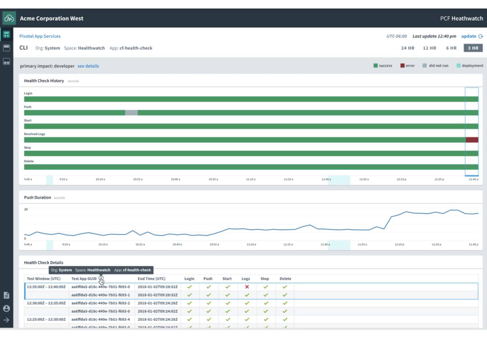

Tl; dr
- For cloud operations teams, understanding the health of their platform is critical but challenging—these platforms emit thousands of metrics, and most are difficult to interpret.
- We designed a UX the enables teams to get up and running quickly without any expert knowledge. Created with domain experts embedded in the design process, HealthWatch is a platform monitoring app that embodies best practices out-of-the-box.
Impact
- HealthWatch gained 100% adoption with 30+ Fortune 500 companies we tracked.
- The PM, engineering lead and I were awarded a U.S. patent for our work.
- I wrote an essay highlighting our design process which was published in PC World and Entwickler.de.
Learnings
- Embedding domain experts in the design process paid off in spades.
- Allowing design to be emergent came with challenges.
- We made progress in getting UCD and Agile to play fairly nice.
Finding a Niche in a Crowded Market
Starting off on a “Fool’s Errand”
This project did not start well. During an early stakeholder interview, a marketing director let us know our product was a "fool’s errand”.
Not long before, the PM and I had been tasked with creating an out-of-the-box dashboard for monitoring Pivotal Cloud Foundry, an operating system for cloud platforms like Amazon’s AWS. Neither of us thought it was a viable concept. At least on the surface.

HealthWatch being unveiled by Pivotal’s VP of R&D at a conference in San Francisco
The Road to 100% Customer Adoption
Fast forward several months. Despite our initial misgivings, we found a direction that would go on to gain 100% adoption with 30+ Fortune 500 companies we tracked.
The road getting to a viable product was not easy. It involved a highly iterative design process. Low fidelity, co-creation and continuous feedback were part of our daily lives.

The main dashboard gives to user an overview of the health of the platform. (Visual design by Justin Roozeboom.)

A detail view showing historical data.
(Visual design by Justin Roozeboom.)
(Visual design by Justin Roozeboom.)
Key Features:
- Baked-in expertise: All of our designs were informed by cloud monitoring experts with deep domain knowledge.
- Automated tests: HealthWatch exercises key functionality and reports back how well it is working. This saves users from needing to learn arcane metrics to infer the health of functionality.
- Batteries included: HealthWatch comes ready to run out-of-the-box. Customers immediately get access to dashboards that embody best practices without having to configure anything.
Role and Team
My Role
As part of an agile team, I drove the overall design process for about a year. I shared research responsibilities with the PM, and led co-creation, rapid prototyping, usability testing and validation.
Skills
Design roadmapping, product validation, co-creation, rapid prototyping, data dashboard design
Collaborators
I worked closely with the PM at first, as I was the sole designer for the first several months. Later on, two designers joined the project on temporary rotations. By enlarge, I worked remotely from San Francisco, while the rest of the team was based in Denver.
Roadmapping
Plotting a Course When There is No Clear Direction
At the onset, we had a lot of questions and not a lot of time. I was meeting with the PM everyday, and during our discussions we started capturing questions we were asking ourselves.
Our questions ranged from, “Is the product viable?” to, “Should we base our product on an open source solution?” We then started brainstorming design process ideas that might help answer those questions.
We had big questions like, “Is the product viable?” and, “Should we base our product on an open source solution?”
The roadmap helped us agree on priorities and map them out on a calendar, which helped us manage stakeholder expectations.

An early version of a design roadmap. Each design activity has a description, outcome, output and timeframe.

We mapped design processes onto a calendar to help manage stakeholder expectations.
Research
Seeing the Customer's Perspective
We created a topic map and set up interviews with around 30 customer platform operators and Pivotal field engineers (who work onsite at our customers’ offices).
Key Learning Goals
- Validation of an out-of-the-box GUI: Would customer even use our GUI? Our top concern was that we would have to displace entrenched competitors in order for our GUI to get traction.
- Understanding the reality of customer platform monitoring: How do customers currently monitor their platforms? What works well? What is painful?
Key Findings
After a few weeks of user interviews and synthesis, a few themes surfaced to the top that we felt addressed our concerns:
Third-party tools are hard to learn:
- Third-party tools are sophisticated and take time to learn. This can be a burden for customers who are new to Cloud Foundry—several customers had tried to use third-party tools for platform monitoring, but gave up.
Data overload:
- There are thousands of metrics and customers don’t know what to monitor. Only a relatively small number of metrics are really needed to be effective, the trick is to know which ones.
Target Persona
New Platform Operator
Todd
Todd
Our target users were platform operators who were new to monitoring. Despite that their teams tend to be small, with four to ten members, there can be more than a thousand developers using the platform once it is at scale.
Key Attributes
- Learning how to monitor CloudFoundry
- Troubleshoots problems, but doesn't actively monitor
- Is often in the process of setting up and learning Cloud Foundry, which can take 8 to 12 months.
Frustrations
- Data overload—There is too much data and it's difficult to make sense of.
- Platform-monitoring software is difficult to learn.
- Flying blind—Doesn't know about issues until there is an outtage.
Quotes
- “The last thing we want is the end user telling us about problems with our applications.”
- "Platform issues are almost always caused by humans, and it's almost always because someone was doing an update."
Strategy
A Three-Pronged Approach
- Define KPIs: A lot of monitoring know-how was in the heads of our field and R&D engineers. The PM consolidated and documented this know-how in the form of KPIs.
- Design a GUI: We used the KPIs as a basis for a UI that would be exemplar of how to visualize and organize metrics. This ended up being a two-way street as some of our designs defined KPIs.
- Provide an API: We knew that our customers will eventually create custom solutions, so we made our metrics available by API.
Design Posture
Around this time, we started thinking about how we might fit in the market: Advanced users will just use the API, but those new to the platform might benefit from an opinionated GUI that would be a bridge for them as they got up and running.

This diagram conveys how when users gain experience, they’ll move over to using the API.
Experience Mapping
Our experience map captured that we would be part of a larger ecosystem: When there is a potential issue with the platform, our users go on a journey through an constellation of alerts, dashboards, and Slack conversations.
Our work would manifest as touchpoints along that journey—sometimes as UIs, sometimes not.


The journey map had a legend that captured user goals and pain points.
Evolution of a design from design studio to production.
Collaboration Models
Embedding Domain Experts in the Design Process
Soon after we started rapid prototyping, we realized that we faced a seemingly insurmountable task: We needed to become experts in a complex domain in order to help users become experts in the domain.
Assembling an Expert Advisory Panel
We reached out through our networks and found coworkers with deep knowledge of platform monitoring and fully embedded them in the design process.

A session with the expert advisory panel.
We made feedback a forcing function. This is how it worked: I committed to presenting to the panel whatever I was working on, in whatever state it was in, every Friday morning.
It worked well—In addition to getting continuous feedback, we built our own education into the process.
We faced a seemingly insurmountable task: We needed to become experts in a complex domain in order to help users become experts in the domain.
Co-Creating
We had a Cloud Foundry operators walk us through a time when they had to troubleshoot a problem. We then went to a whiteboard and co-designed the dashboard the operator wished they had.
Co-creation brought deep domain expertise to our understanding of the problems we were solving.
A co-creation session with an operations engineer.
We took notes and annotated photos of the designs.
Here are a couple of interesting things we learned:
- The question “When?” is paramount: “When did the system first start to have problems?” is one of the first things operators want to know. We made timestamps as precise as possible.
- Component IDs and timestamps are keys: Operators bounce between our app and others, such as log search tools. Component IDs and timestamps are the two things you need when jumping between systems. We add copy-to-clipboard buttons to everything we could.
Weekly Engineering Reviews
Every Monday, I got the whole team together for 30 minutes and present whatever designs I was working on: low-fi sketches, user flows, wireframes, UI components, etc. I then got the engineering team to offer any thoughts or concerns they might have. What we got was a gut-check for complexity, which got the value/cost discussion going early.
Prototyping Example
Design as Learning
In our situaltion, it was almost impossible to thoroughly understand metrics and all their implications up front. We needed to just get ideas out of our heads and into the world quickly and start learning. Rapid prototyping means being wrong constantly until you gain confidence that you aren't.
Example: Routers HTTP Requests

The evolution of our router health panel. (Last panel by Justin Roozeboom.)
The design above on the left was our initial attempt at a router health design we presented to the advisory panel. It did not go over well. During our first feedback session, one panel member's first comment was, "I don't like anything about this."

Our first router panel design didn't go over well.
I probed the panel by asking, "What about this don't you like?" We quickly learned what we got wrong: We focused too much on router CPU and tried to force everything into a stoplight visualization. We didn't include overall traffic.
So we went back to the drawing board. (Literally.)

Two more versions. We increased fidelity as our confidence in the design grew.
What we learned from the expert panel is that operators care first about overall traffic and whether it is trending up or down. If something is concerning, they then will want router details, such as latency and errors.
Layout and Hierarchy
For data dashboards, like in typography, meaning drives layout.
Through our iterative design process, we first understood the implications of metrics and how they naturally hung together with others. That drove layout decisions. For example, some indicators, like HTTP throughput, are key to interpreting others, and therefore are given prominence.


Examples of how interpreting a metric is often contingent on others. This informed layout decisions.
Dogfooding
Making First Contact with Reality
HealthWatch would need to help operations teams
navigate through unexpected disruptions, the nature of which can't be predicted. That meant we needed to test under real-world circumstances with real data.
Pivotal’s cloud operations team in Ireland agreed to be the first to use HealthWatch in a production environment. That team hosted a SaaS product called Pivotal Tracker, an agile project management tool which has several hundred-thousand active users.
Weekly Check-Ins
We conducted weekly check-in sessions. In these sessions, members of the operations teams walked us through scenarios where they used HealthWatch. We got a lot of usability feedback, but also validated that the app helped them get through unexpected problems, such as failed upgrades.
Card Sorting
Once the operations team had been using HealthWatch for several weeks, we gave operations team members workbooks in Google Draw that contained movable metrics panels. We then asked them to arrange the dashboard the way they would like it.
Alpha testers arranged their ideal dashboard layout.
After that, we interviewed the operators to understand the thinking behind their layouts. This eventually led us to grouping metrics into three areas of impact:
Feature Vetting
After the card sort, we had team members independently tell us what metrics they would remove from the main dashboard and why.
This got us to declutter and move about 25 percent of the main dashboard to deep dive views.
Alpha testers voted metrics off the island.
Conclusion
Impact
Measurable Outcome Success
We hypothesized that five of seven potential customers would install our closed beta and give us three feedabck sessions. This tested whether customers would be willing to "pay" for beta access and worked as a leading indicator of adoption. The first five signed up.
Customer Impact
In one of our beta feedback sessions, a customer kept repeating the phrase, "This is golden". A few weeks before, his team started hearing complaints from developers that they couldn't push their apps onto the platform.
What nobody knew at the time was that the platform had run out of memory. That resulted in days of frustration that would not have occurred if they had our product—the team would have been alerted to low memory long before running out.
Impact on Pivotal's Design Practice
User-centered design was not widely practiced in Pivotal's R&D department when we started. After launch, I gave two lightning talks and wrote an essay on our process (which was published in PC World and translated into German).
Impact on Marketing and Sales
Dogfooding allowed for our sales and marketing teams to say, “We use this product ourselves.” I also heard from the field that the out-of-the-box UI played well in sales demos.
U.S. Patent
About one year after our GA (generally available) release, I shared a U.S. patent with the PM and engineering lead.

Diagram from patent No.
US20190188107A1 for “Health monitoring for cloud computing platforms”.
Learnings
The expert advisory panel worked well:
- By meeting regularly, the panel felt they were part of the process. We developed a repore, which meant we got comfortable giving and getting critical feedback.
- The field engineers on the panel were, in the end, basically SMEs (subject matter experts). They trained other field engineers.
Emergent design came with challenges:
- Our design emerged over several weeks which made IA challenging. We made design decisions optimized locally and when stepped back, getting everything to sync was difficult.
We got UCD and Agile to play fairly nice:
- Our weekly 30-minute design review with engineering worked well. We were able to make engineering part of the process while respecting their time.
- There is still work to be done in figuring our how to sync the oscillating cadence of a design process with the relentless momentum of an Agile dev team.